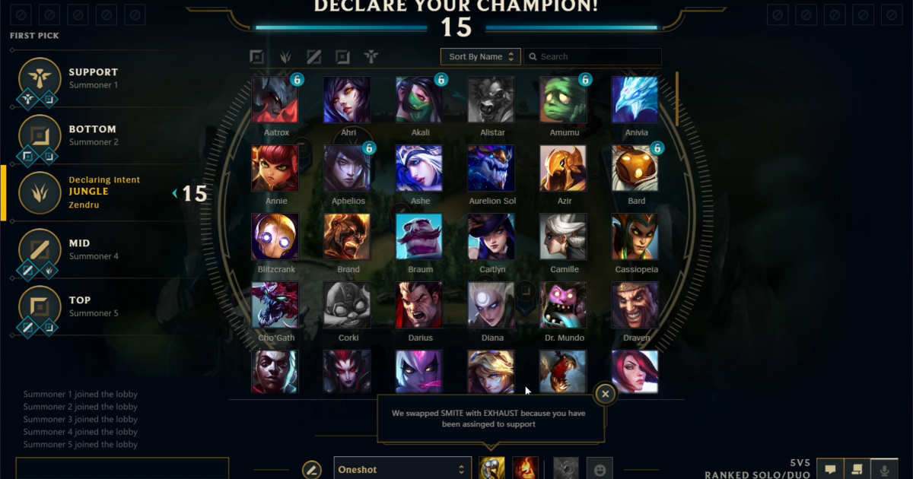

Som ni kan se på den här bilden så finns det en det som en map längs nere åt höger, det finns många saker i detta spel, spelet innebär på att köra 5 mot 5 och ha olika platser och olika roller.
League of legends is a very good free t play game, it is fun to play and you can play them with your friends, family, dad, mom, and yourself. League of legends is very worth it if you would like free to play games!
Som ni kan se på den här bilden så finns det en det som en map längs nere åt höger, det finns många saker i detta spel, spelet innebär på att köra 5 mot 5 och ha olika platser och olika roller.
Som ni kan se här så finns det olika lanes som står Jungle, Top, Mid, Bottom och Support. De 5 är de olika rollerna som man kan välja innan man kommer till champselect, men som ni kan se så finns det väldigt många gubbar/champion som man kan välja och gilla en gubbe och spela den gubben.
Det här är en champion som heter Yasuo, Han är är en fighter type champion, han har unika attacker som är annorlunda till de andra champions!
Yasuo är en fighter type champion men det finns mycket mer som till exempel assasins, tank, marksman och mycket mer, spelet är väldigt bra och väldigt roligt!
Det här är Items för spelet vilket gör så att gubbarna blir starkare, Gubbarna blir starkare med den typen av attack damage har till exempell. på en fighter type champion så skulle attack damagde funka på han och göra han starckare. men om det hade varit en mage gubbe så skulle det vara ability power som ska vara köpt för den gubben!